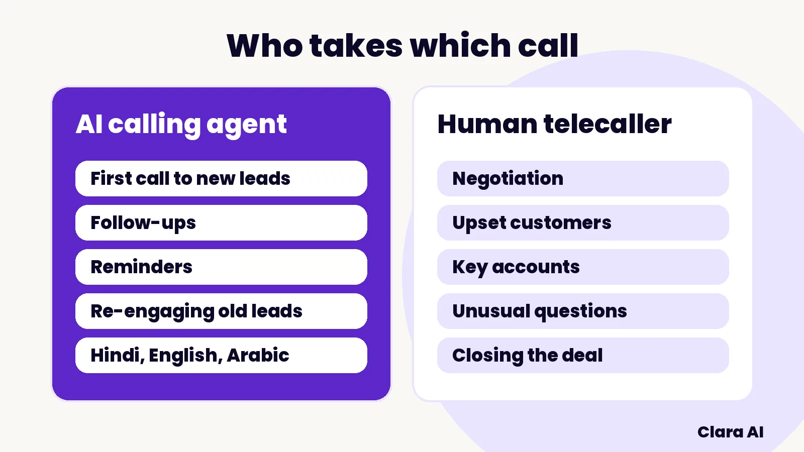

An AI calling agent is better than a human telecaller at fast, high-volume, routine calls: first calls to new leads, follow-ups, reminders and re-engagement. A human telecaller is better at negotiation, upset customers and unusual questions. The strongest setup gives each type of call to the one that suits it, with a person always able to take over.
This article is for founders, sales heads and operations heads in India and the Gulf who run a telecalling team and are asking whether an AI calling agent should take some of the work. It compares the two honestly, including where a person still wins.
An AI calling agent is software that makes and takes phone calls in natural spoken language, answers from information your company has approved, books the next step and hands over to a person with the full context. A human telecaller is a person who does the same job from a script and a CRM screen.
The difference is not intelligence. It is how each one handles volume, hours and repetition. A telecaller has a shift, a break and a daily limit. An agent does not. A telecaller can read a customer's mood in one sentence. An agent follows the rules you give it and stops when it reaches the edge of them.
For the basics, read What Is an AI Calling Agent and How Does It Work?
Here is a side-by-side view across the points sales and operations heads ask about most.
| What you need | AI calling agent | Human telecaller |
|---|---|---|
| Speed to first call | Calls a new lead within minutes, at any hour you allow | Calls when free, usually in working hours |
| Volume | Many calls in parallel, so a launch-day spike does not pile up | One call at a time, limited by shift length |
| Consistency | Asks the same questions in the same order every time | Varies by person, mood and day |
| Languages | English, Hindi and Arabic, tested on your real calls | Depends on who you hire |
| Judgement and empathy | Limited. Hands over when unsure or when asked | Strong. Reads tone and adapts |
| Negotiation and closing | Not its job. Books the next step for a person | This is where a person earns their place |
| Record keeping | Writes the outcome and a summary to your CRM every time | Often incomplete when the day is busy |
| Management | Clara AI tracks results and improves the script | You hire, train, supervise and replace |

An AI calling agent wins wherever the work is repetitive, time-sensitive or easy to forget.
A person is still the better choice when the call needs judgement, trust or flexibility. Be honest about these, because an agent that oversteps hurts your brand.
Our post on an AI calling agent for real estate lead follow-up shows this split on a real sales process.
Teams in both regions usually end up with a simple division of labour, not an either-or choice.
In the Gulf, the agent can speak Arabic and English, and a WhatsApp message after the call carries the details. In India, it can speak Hindi and English, including mixed speech. See how this works in practice in our guide to an AI calling agent for Dubai real estate.
Sort your calls by two questions: is the call routine, and is it time-sensitive? Routine and time-sensitive calls go to the agent. Complex or high-value calls go to a person. Use this checklist to sort your list.
Measure before and after. Note your time to first call, the share of leads reached and the number of next steps booked. The baseline tells you what the agent changed.
Consent, telemarketing and data-protection rules apply to AI calls in India and in the Gulf, and Clara AI builds within them. The agent says at the start that it is an automated assistant, and it is designed for people who have enquired and shared their number. This is not legal advice, so check your own calling plans with your legal adviser.
Clara AI, an AI implementation company, builds, deploys and manages calling agents in six steps.
Clara AI is a team of 14 that builds AI agents for 19 businesses, in India and the Gulf. We scope each build after seeing your material, so this article quotes no Clara AI prices. If your buyers are also on LinkedIn, our AI LinkedIn Outreach Agent finds the right people and passes warm replies to you on WhatsApp. If you want steady search traffic, our AI SEO Agent writes, publishes and tracks a blog post every day.